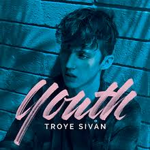

Troye Sivan
What if, what if we run away? What if, what if we left today? What if we said goodbye to safe and sound? And what if, what if we're hard to find? What if, what if we lost our minds? What if we let them fall behind and they're never found? And when the lights start flashing like a photobooth And the stars exploding, we’ll be fireproof My youth, my youth is yours Trippin' on skies, sippin' waterfalls My youth, my youth is yours Runaway now and forevermore My youth, my youth is yours A truth so loud you can't ignore My youth, my youth, my youth My youth is yours My youth is yours My youth is yours My youth is yours What if, what if we start to drive? What if, what if we close our eyes? What if we're speeding through red lights into paradise? 'Cause we've no time for getting old Mortal body, timeless souls Cross your fingers, here we go Oh oh oh oh And when the lights start flashing like a photobooth And when the lights start flashing, flashing, flashing And when the lights start flashing My youth, my youth is yours Trippin' on skies, sippin' waterfalls My youth, my youth is yours Runaway now and forevermore My youth, my youth is yours A truth so loud you can't ignore My youth, my youth, my youth My youth is yours My youth is yours My youth is yours My youth is yours